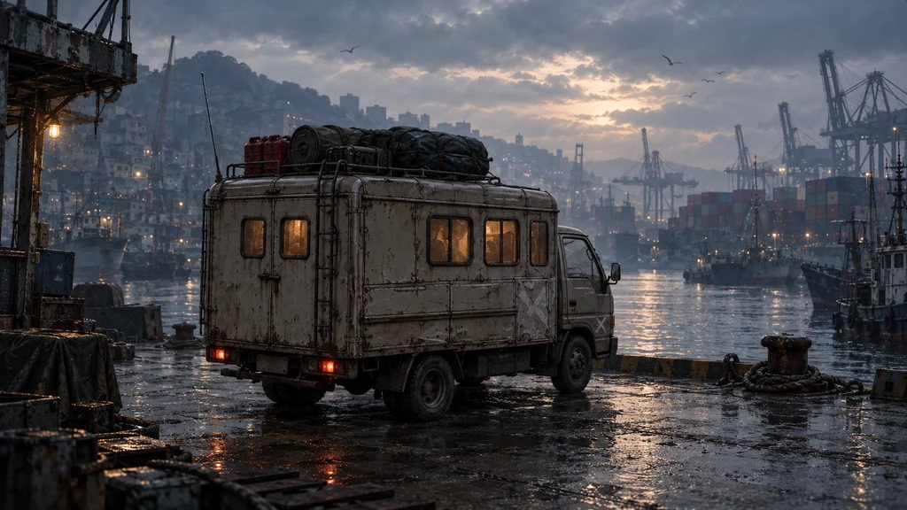

멸망 이후, 부산에서 서울까지
서울까지
400km

출발 기록
부산 → 서울8자까지. 비워 두면 ‘나’로 기록합니다.
연료와 물자를 고르게 싣는다.
처음 떠나는 길에 알맞다.
- 연료
- 42L
- 고철
- 24
- 물
- 16
- 식량
- 14
- 부품
- 1
- 차체
- 82%
연료는 16L뿐이다.
고철과 부품으로 첫 정착지까지 버틴다.
- 연료
- 16L
- 고철
- 44
- 물
- 12
- 식량
- 10
- 부품
- 3
- 차체
- 82%
연료와 생존 물자는 넉넉하지만
부품 없이 길을 연다.
- 연료
- 52L
- 고철
- 6
- 물
- 26
- 식량
- 24
- 부품
- 0
- 차체
- 74%
그림 속 짐은 구도 예시입니다. 출발 물자는 위 수치 기준입니다.